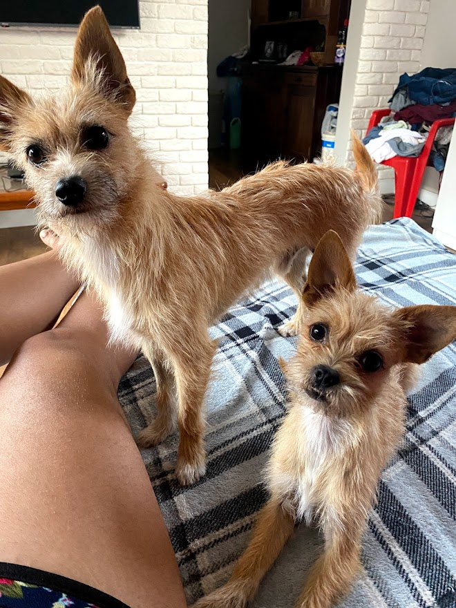
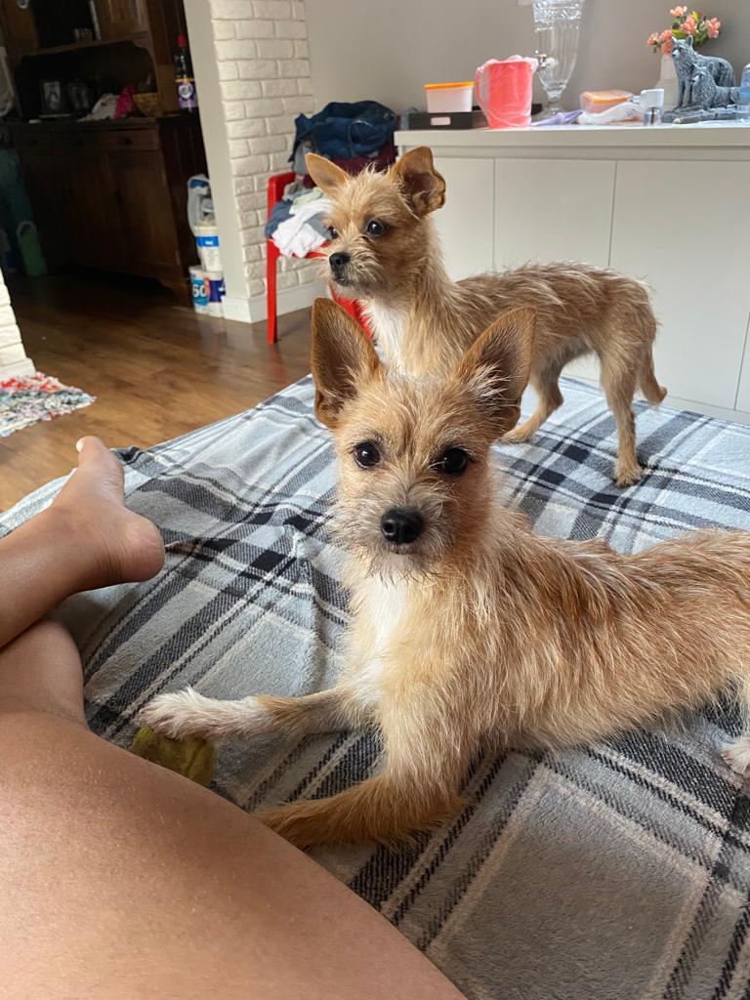

 
Esses são Shiba e Zayah, os donos da casa, Zayah é a mandante e Shiba é o que executa, assim, formam a dupla dinâmica. Eles amam fazer certas coisas durante o dia, vou pontuar aqui algumas delas.
Contei para vocês algumas das milhares de coisas que Shiba e Zayah adoram fazer durante o dia.
Aaah quase me esqueci de colocar nesta lista o mais importante de todos: